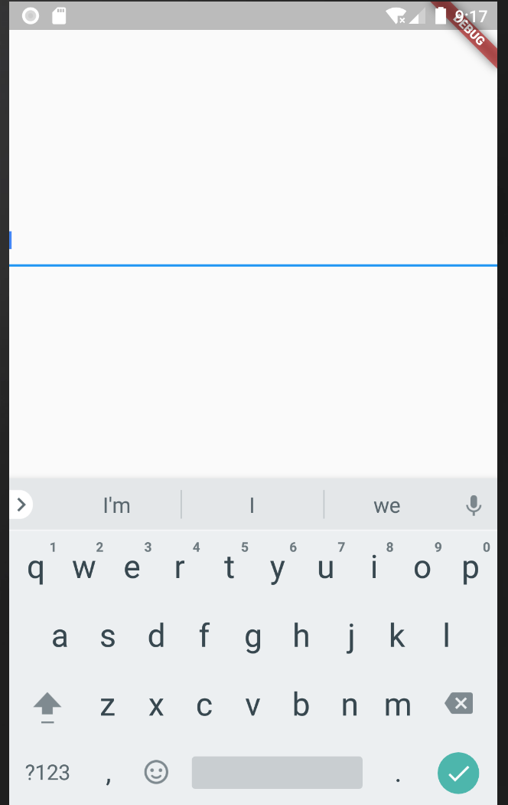
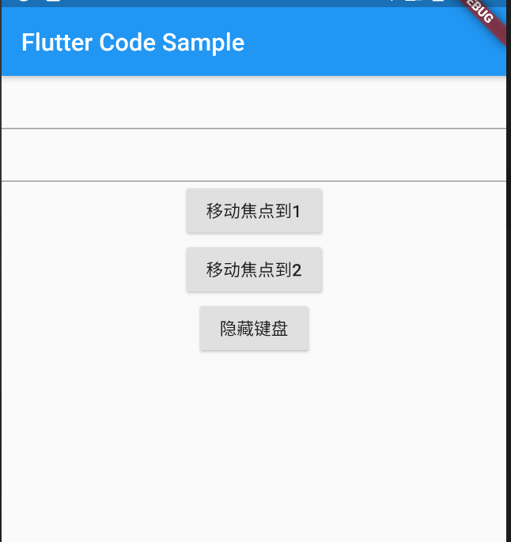
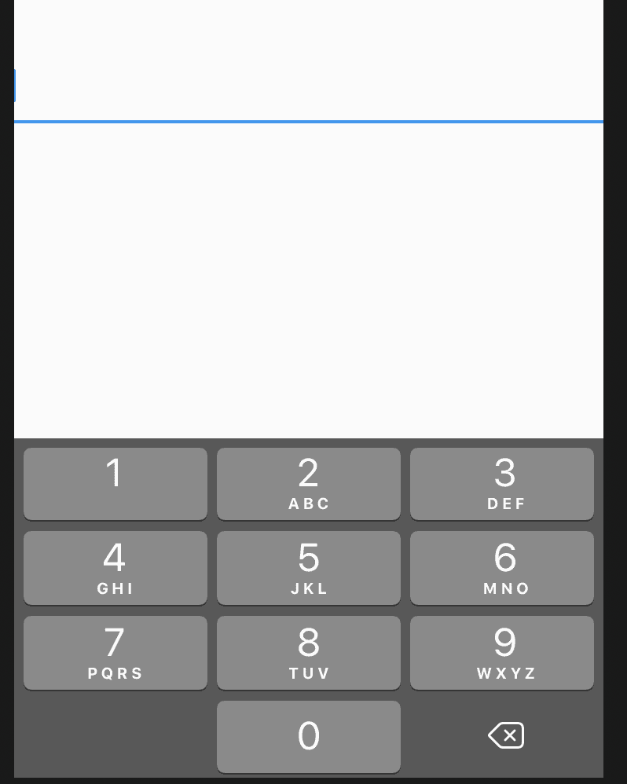
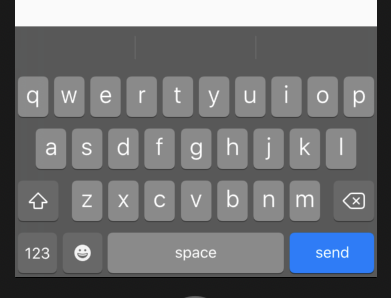
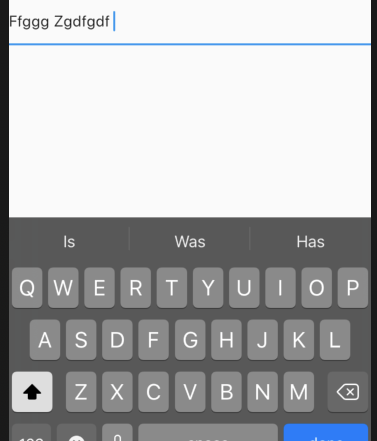
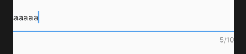
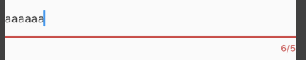

<!DOCTYPE html>
<html lang="en">

<head><meta name="generator" content="Hexo 3.9.0">
  <meta charset="utf-8">
    
  <meta name="viewport" content="width=device-width, initial-scale=1, maximum-scale=1">
  <title>
    输入框TextField |  MonkeyInWind
  </title>
  
  <link rel="shortcut icon" href="/favicon.ico">
  
  <link rel="stylesheet" href="/css/style.css">
  <script src="/js/pace.min.js"></script>

  

<script type="text/javascript">
(function(i,s,o,g,r,a,m){i['GoogleAnalyticsObject']=r;i[r]=i[r]||function(){
(i[r].q=i[r].q||[]).push(arguments)},i[r].l=1*new Date();a=s.createElement(o),
m=s.getElementsByTagName(o)[0];a.async=1;a.src=g;m.parentNode.insertBefore(a,m)
})(window,document,'script','//www.google-analytics.com/analytics.js','ga');

ga('create', 'UA-155359064-1', 'auto');
ga('send', 'pageview');

</script>


  

</head>

</html>

<body>
  <div id="app">
    <main class="content">
      <section class="outer">
  <article id="post-flutterTextFieldWidget" class="article article-type-post" itemscope
  itemprop="blogPost" data-scroll-reveal>

  <div class="article-inner">
    
    <header class="article-header">
       
<h1 class="article-title sea-center" style="border-left:0" itemprop="name">
  输入框TextField
</h1>
  

    </header>
    

    
    <div class="article-meta">
      <a href="/post/flutterTextFieldWidget/" class="article-date">
  <time datetime="2020-01-05T11:52:49.000Z" itemprop="datePublished">2020-01-05</time>
</a>
      
    </div>
    

    
    
    <div class="tocbot"></div>


    

    <div class="article-entry" itemprop="articleBody">
      


      

      
      <p>这个组件属性很多。。。<br>先看一下吧</p>
<a id="more"></a>
<figure class="highlight plain"><table><tr><td class="gutter"><pre><span class="line">1</span><br><span class="line">2</span><br><span class="line">3</span><br><span class="line">4</span><br><span class="line">5</span><br><span class="line">6</span><br><span class="line">7</span><br><span class="line">8</span><br><span class="line">9</span><br><span class="line">10</span><br><span class="line">11</span><br><span class="line">12</span><br><span class="line">13</span><br><span class="line">14</span><br><span class="line">15</span><br><span class="line">16</span><br><span class="line">17</span><br><span class="line">18</span><br><span class="line">19</span><br><span class="line">20</span><br><span class="line">21</span><br><span class="line">22</span><br><span class="line">23</span><br><span class="line">24</span><br><span class="line">25</span><br><span class="line">26</span><br><span class="line">27</span><br><span class="line">28</span><br><span class="line">29</span><br><span class="line">30</span><br><span class="line">31</span><br><span class="line">32</span><br><span class="line">33</span><br><span class="line">34</span><br><span class="line">35</span><br><span class="line">36</span><br><span class="line">37</span><br><span class="line">38</span><br><span class="line">39</span><br><span class="line">40</span><br></pre></td><td class="code"><pre><span class="line">const TextField(&#123;</span><br><span class="line">  Key key,</span><br><span class="line">  TextEditingController controller,            //输入框的控制器</span><br><span class="line">  FocusNode focusNode,           //控制输入框是否获得焦点</span><br><span class="line">  InputDecoration decoration: const InputDecoration(),    //设置输入框的外观</span><br><span class="line">  TextInputType keyboardType,          //键盘类型</span><br><span class="line">  TextInputAction textInputAction,         //回车按钮的类型</span><br><span class="line">  TextCapitalization textCapitalization: TextCapitalization.none,    // 键盘大小写</span><br><span class="line">  TextStyle style,             //文本样式</span><br><span class="line">  StrutStyle strutStyle,</span><br><span class="line">  TextAlign textAlign: TextAlign.start,     //水平方向对齐方式</span><br><span class="line">  TextAlignVertical textAlignVertical,      //垂直方向对齐方式</span><br><span class="line">  TextDirection textDirection,           //文本书写顺序</span><br><span class="line">  bool readOnly: false,          //是否只读</span><br><span class="line">  bool showCursor,        //是否显示光标</span><br><span class="line">  bool autofocus: false,         //是否自动获得焦点</span><br><span class="line">  bool obscureText: false,     //是否隐藏正在输入的文本，内容显示为圆点</span><br><span class="line">  bool autocorrect: true,    //是否自动修正</span><br><span class="line">  int maxLines: 1,        //输入框的最大行数</span><br><span class="line">  int minLines,            //最小行数</span><br><span class="line">  bool expands: false,    //是否填充父级</span><br><span class="line">  int maxLength,             //文本最大长度</span><br><span class="line">  bool maxLengthEnforced: true,          //超过文本最大长度是否限制输入</span><br><span class="line">  ValueChanged&lt;String&gt; onChanged,      //输入文本时的回调</span><br><span class="line">  VoidCallback onEditingComplete,          //完成输入时触发（按回车）</span><br><span class="line">  ValueChanged&lt;String&gt; onSubmitted,        //完成输入时触发，接收当前输入文本为参数</span><br><span class="line">  List&lt;TextInputFormatter&gt; inputFormatters,      //指定输入格式</span><br><span class="line">  bool enabled,             //是否可用</span><br><span class="line">  double cursorWidth: 2.0,            //光标宽度</span><br><span class="line">  Radius cursorRadius,                //光标圆角</span><br><span class="line">  Color cursorColor,                      //光标颜色</span><br><span class="line">  Brightness keyboardAppearance,        //键盘色调，只在ios上有效</span><br><span class="line">  EdgeInsets scrollPadding: const EdgeInsets.all(20.0),   //当输入框获得焦点并且有一部分被滚动出屏外时，将自动滚动。</span><br><span class="line">  DragStartBehavior dragStartBehavior: DragStartBehavior.start,</span><br><span class="line">  bool enableInteractiveSelection,      //是否允许选中</span><br><span class="line">  GestureTapCallback onTap,            //点击回调</span><br><span class="line">  InputCounterWidgetBuilder buildCounter,</span><br><span class="line">  ScrollController scrollController,</span><br><span class="line">  ScrollPhysics scrollPhysics</span><br><span class="line">&#125;)</span><br></pre></td></tr></table></figure>

<p>先来一个最简单的demo</p>
<figure class="highlight plain"><table><tr><td class="gutter"><pre><span class="line">1</span><br><span class="line">2</span><br><span class="line">3</span><br><span class="line">4</span><br><span class="line">5</span><br><span class="line">6</span><br><span class="line">7</span><br><span class="line">8</span><br><span class="line">9</span><br><span class="line">10</span><br><span class="line">11</span><br><span class="line">12</span><br><span class="line">13</span><br><span class="line">14</span><br><span class="line">15</span><br><span class="line">16</span><br><span class="line">17</span><br><span class="line">18</span><br><span class="line">19</span><br></pre></td><td class="code"><pre><span class="line">import &apos;package:flutter/material.dart&apos;;</span><br><span class="line"></span><br><span class="line">void main() =&gt; runApp(MyApp());</span><br><span class="line"></span><br><span class="line">class MyApp extends StatelessWidget &#123;</span><br><span class="line">  // This widget is the root of your application.</span><br><span class="line">  @override</span><br><span class="line">  Widget build(BuildContext context) &#123;</span><br><span class="line">    return new MaterialApp(</span><br><span class="line">        home: Scaffold(</span><br><span class="line">            body: Center(</span><br><span class="line">              child: TextField(</span><br><span class="line"></span><br><span class="line">              )</span><br><span class="line">            )</span><br><span class="line">        )</span><br><span class="line">    );</span><br><span class="line">  &#125;</span><br><span class="line">&#125;</span><br></pre></td></tr></table></figure>

<p>屏幕中间一条线…点击获得焦点。<br><br>接下来挨个属性看一下</p>
<h2 id="1、controller"><a href="#1、controller" class="headerlink" title="1、controller"></a>1、controller</h2><p>输入框文本发生改变时触发，但不限于这个功能。<br>先看demo</p>
<figure class="highlight plain"><table><tr><td class="gutter"><pre><span class="line">1</span><br><span class="line">2</span><br><span class="line">3</span><br><span class="line">4</span><br><span class="line">5</span><br><span class="line">6</span><br><span class="line">7</span><br><span class="line">8</span><br><span class="line">9</span><br><span class="line">10</span><br><span class="line">11</span><br><span class="line">12</span><br><span class="line">13</span><br><span class="line">14</span><br><span class="line">15</span><br><span class="line">16</span><br><span class="line">17</span><br><span class="line">18</span><br><span class="line">19</span><br><span class="line">20</span><br><span class="line">21</span><br><span class="line">22</span><br><span class="line">23</span><br><span class="line">24</span><br><span class="line">25</span><br><span class="line">26</span><br><span class="line">27</span><br><span class="line">28</span><br><span class="line">29</span><br><span class="line">30</span><br><span class="line">31</span><br><span class="line">32</span><br><span class="line">33</span><br><span class="line">34</span><br><span class="line">35</span><br><span class="line">36</span><br><span class="line">37</span><br><span class="line">38</span><br><span class="line">39</span><br><span class="line">40</span><br><span class="line">41</span><br></pre></td><td class="code"><pre><span class="line">import &apos;package:flutter/material.dart&apos;;</span><br><span class="line"></span><br><span class="line">void main() =&gt; runApp(MyApp());</span><br><span class="line"></span><br><span class="line">class MyApp extends StatelessWidget &#123;</span><br><span class="line">  // This widget is the root of your application.</span><br><span class="line">  @override</span><br><span class="line">  Widget build(BuildContext context) &#123;</span><br><span class="line">    return new MaterialApp(</span><br><span class="line">        home: Scaffold(</span><br><span class="line">            body: TextFieldDemo()</span><br><span class="line">        )</span><br><span class="line">    );</span><br><span class="line">  &#125;</span><br><span class="line">&#125;</span><br><span class="line"></span><br><span class="line">class TextFieldDemo extends StatefulWidget &#123;</span><br><span class="line">  @override</span><br><span class="line">  _TextFieldState createState() =&gt; new _TextFieldState();</span><br><span class="line">&#125;</span><br><span class="line"></span><br><span class="line">class _TextFieldState extends State&lt;TextFieldDemo&gt; &#123;</span><br><span class="line">  TextEditingController _controller = TextEditingController();</span><br><span class="line"></span><br><span class="line">  @override</span><br><span class="line">  void initState() &#123;</span><br><span class="line">    _controller.addListener(() &#123;</span><br><span class="line">      print(_controller.text);</span><br><span class="line">    &#125;);</span><br><span class="line">    super.initState();</span><br><span class="line">  &#125;</span><br><span class="line"></span><br><span class="line">  @override</span><br><span class="line">  Widget build(BuildContext context) &#123;</span><br><span class="line">    return Center(</span><br><span class="line">      child: TextField(</span><br><span class="line">        controller: _controller</span><br><span class="line">      )</span><br><span class="line">    );</span><br><span class="line">  &#125;</span><br><span class="line">&#125;</span><br></pre></td></tr></table></figure>

<p>和前几个组件类似，但不相同，不只是一个状态值，而是有一个controller，并且在initState里监听文本变化。<br>是不是感觉和<code>onChange</code>重复了，继续往下看，除了监听文本变化，还有一些其他的功能。</p>
<h3 id="设置默认值"><a href="#设置默认值" class="headerlink" title="设置默认值"></a>设置默认值</h3><p>initState方法修改如下</p>
<figure class="highlight plain"><table><tr><td class="gutter"><pre><span class="line">1</span><br><span class="line">2</span><br><span class="line">3</span><br><span class="line">4</span><br><span class="line">5</span><br><span class="line">6</span><br><span class="line">7</span><br><span class="line">8</span><br></pre></td><td class="code"><pre><span class="line">@override</span><br><span class="line">void initState() &#123;</span><br><span class="line">  _controller.text = &apos;default value&apos;;      //输入框的默认值</span><br><span class="line">  _controller.addListener(() &#123;</span><br><span class="line">    print(_controller.text);</span><br><span class="line">  &#125;);</span><br><span class="line">  super.initState();</span><br><span class="line">&#125;</span><br></pre></td></tr></table></figure>

<h3 id="清空输入框"><a href="#清空输入框" class="headerlink" title="清空输入框"></a>清空输入框</h3><p>initState方法修改如下</p>
<figure class="highlight plain"><table><tr><td class="gutter"><pre><span class="line">1</span><br><span class="line">2</span><br><span class="line">3</span><br><span class="line">4</span><br><span class="line">5</span><br><span class="line">6</span><br><span class="line">7</span><br><span class="line">8</span><br><span class="line">9</span><br></pre></td><td class="code"><pre><span class="line">@override</span><br><span class="line">void initState() &#123;</span><br><span class="line">  _controller.text = &apos;default value&apos;;</span><br><span class="line">  _controller.addListener(() &#123;</span><br><span class="line">    print(_controller.text);</span><br><span class="line">    _controller.clear();</span><br><span class="line">  &#125;);</span><br><span class="line">  super.initState();</span><br><span class="line">&#125;</span><br></pre></td></tr></table></figure>

<p>当输入框获得焦点时，会触发<code>_controller</code>这个时候调用<code>clear</code>方法会清空输入框。</p>
<h3 id="selection"><a href="#selection" class="headerlink" title="selection"></a>selection</h3><p>将initState方法修改如下：</p>
<figure class="highlight plain"><table><tr><td class="gutter"><pre><span class="line">1</span><br><span class="line">2</span><br><span class="line">3</span><br><span class="line">4</span><br><span class="line">5</span><br><span class="line">6</span><br><span class="line">7</span><br><span class="line">8</span><br><span class="line">9</span><br><span class="line">10</span><br><span class="line">11</span><br><span class="line">12</span><br><span class="line">13</span><br></pre></td><td class="code"><pre><span class="line">void initState() &#123;</span><br><span class="line">  _controller.text = &apos;default value&apos;;</span><br><span class="line">  _controller.selection = TextSelection(</span><br><span class="line">    baseOffset: 3,</span><br><span class="line">    extentOffset: 5,</span><br><span class="line">    affinity: TextAffinity.upstream,</span><br><span class="line">    isDirectional: true</span><br><span class="line">  );</span><br><span class="line">  _controller.addListener(() &#123;</span><br><span class="line">    print(_controller.text);</span><br><span class="line">  &#125;);</span><br><span class="line">  super.initState();</span><br><span class="line">&#125;</span><br></pre></td></tr></table></figure>

<p><code>baseOffset</code>和<code>extentOffset</code>配对使用，demo中的写法为从文本中第四个和第五个字符为选中状态。<br>另外的两个我不知道是干啥的。。。</p>
<h2 id="2、focusNode"><a href="#2、focusNode" class="headerlink" title="2、focusNode"></a>2、focusNode</h2><p>焦点控制</p>
<figure class="highlight plain"><table><tr><td class="gutter"><pre><span class="line">1</span><br><span class="line">2</span><br><span class="line">3</span><br><span class="line">4</span><br><span class="line">5</span><br><span class="line">6</span><br><span class="line">7</span><br><span class="line">8</span><br><span class="line">9</span><br><span class="line">10</span><br><span class="line">11</span><br><span class="line">12</span><br><span class="line">13</span><br><span class="line">14</span><br><span class="line">15</span><br><span class="line">16</span><br><span class="line">17</span><br><span class="line">18</span><br><span class="line">19</span><br><span class="line">20</span><br><span class="line">21</span><br><span class="line">22</span><br><span class="line">23</span><br><span class="line">24</span><br><span class="line">25</span><br><span class="line">26</span><br><span class="line">27</span><br><span class="line">28</span><br><span class="line">29</span><br><span class="line">30</span><br><span class="line">31</span><br><span class="line">32</span><br><span class="line">33</span><br><span class="line">34</span><br><span class="line">35</span><br><span class="line">36</span><br><span class="line">37</span><br><span class="line">38</span><br><span class="line">39</span><br><span class="line">40</span><br><span class="line">41</span><br><span class="line">42</span><br><span class="line">43</span><br><span class="line">44</span><br><span class="line">45</span><br><span class="line">46</span><br><span class="line">47</span><br><span class="line">48</span><br><span class="line">49</span><br><span class="line">50</span><br><span class="line">51</span><br><span class="line">52</span><br><span class="line">53</span><br><span class="line">54</span><br><span class="line">55</span><br><span class="line">56</span><br><span class="line">57</span><br><span class="line">58</span><br><span class="line">59</span><br><span class="line">60</span><br><span class="line">61</span><br><span class="line">62</span><br><span class="line">63</span><br><span class="line">64</span><br><span class="line">65</span><br><span class="line">66</span><br><span class="line">67</span><br><span class="line">68</span><br><span class="line">69</span><br><span class="line">70</span><br><span class="line">71</span><br><span class="line">72</span><br><span class="line">73</span><br><span class="line">74</span><br><span class="line">75</span><br><span class="line">76</span><br><span class="line">77</span><br><span class="line">78</span><br><span class="line">79</span><br><span class="line">80</span><br><span class="line">81</span><br><span class="line">82</span><br><span class="line">83</span><br><span class="line">84</span><br><span class="line">85</span><br><span class="line">86</span><br><span class="line">87</span><br><span class="line">88</span><br><span class="line">89</span><br><span class="line">90</span><br><span class="line">91</span><br><span class="line">92</span><br></pre></td><td class="code"><pre><span class="line">import &apos;package:flutter/material.dart&apos;;</span><br><span class="line"></span><br><span class="line">void main() =&gt; runApp(MyApp());</span><br><span class="line"></span><br><span class="line">/// This Widget is the main application widget.</span><br><span class="line">class MyApp extends StatelessWidget &#123;</span><br><span class="line">  static const String _title = &apos;Flutter Code Sample&apos;;</span><br><span class="line"></span><br><span class="line">  @override</span><br><span class="line">  Widget build(BuildContext context) &#123;</span><br><span class="line">    return MaterialApp(</span><br><span class="line">      title: _title,</span><br><span class="line">      home: Scaffold(</span><br><span class="line">        appBar: AppBar(title: const Text(_title)),</span><br><span class="line">        body: FocusNodeDemo(),</span><br><span class="line">      ),</span><br><span class="line">    );</span><br><span class="line">  &#125;</span><br><span class="line">&#125;</span><br><span class="line"></span><br><span class="line">class FocusNodeDemo extends StatefulWidget &#123;</span><br><span class="line">  @override</span><br><span class="line">  _FocusNodeState createState() =&gt; new _FocusNodeState();</span><br><span class="line">&#125;</span><br><span class="line"></span><br><span class="line">class _FocusNodeState extends State&lt;FocusNodeDemo&gt; &#123;</span><br><span class="line">  FocusNode focusNode1 = new FocusNode();</span><br><span class="line">  FocusNode focusNode2 = new FocusNode();</span><br><span class="line">  FocusScopeNode focusScopeNode;</span><br><span class="line"></span><br><span class="line">  @override</span><br><span class="line">  Widget build(BuildContext context) &#123;</span><br><span class="line">    return Container (</span><br><span class="line">      child: Column(</span><br><span class="line">        children: &lt;Widget&gt;[</span><br><span class="line">          TextField(</span><br><span class="line">            //关联focusNode1</span><br><span class="line">            focusNode: focusNode1,     </span><br><span class="line">          ),</span><br><span class="line">          TextField(</span><br><span class="line">             //关联focusNode2</span><br><span class="line">            focusNode: focusNode2,             </span><br><span class="line">          ),</span><br><span class="line">          RaisedButton(</span><br><span class="line">            child: Text(&apos;移动焦点到1&apos;),</span><br><span class="line">            onPressed: () &#123;</span><br><span class="line">              //没有输入框获得焦点时初始值为null</span><br><span class="line">              if (focusScopeNode == null) &#123;</span><br><span class="line">                focusScopeNode = FocusScope.of(context);</span><br><span class="line">              &#125;</span><br><span class="line">              //focusNode1获得焦点</span><br><span class="line">              focusScopeNode.requestFocus(focusNode1);</span><br><span class="line">              //focusNode1和focusNode2焦点状态</span><br><span class="line">              print(focusNode1.hasFocus);</span><br><span class="line">              print(focusNode2.hasFocus);</span><br><span class="line">            &#125;</span><br><span class="line">          ),</span><br><span class="line">          RaisedButton(</span><br><span class="line">            child: Text(&apos;移动焦点到2&apos;),</span><br><span class="line">            onPressed: () &#123;</span><br><span class="line">               //没有输入框获得焦点时初始值为null</span><br><span class="line">              if (focusScopeNode == null) &#123;</span><br><span class="line">                focusScopeNode = FocusScope.of(context);</span><br><span class="line">              &#125;</span><br><span class="line">              //focusNode2获得焦点</span><br><span class="line">              focusScopeNode.requestFocus(focusNode2);</span><br><span class="line">              //focusNode1和focusNode2焦点状态</span><br><span class="line">              print(focusNode1.hasFocus);</span><br><span class="line">              print(focusNode2.hasFocus);</span><br><span class="line">            &#125;</span><br><span class="line">          ),</span><br><span class="line">          RaisedButton(</span><br><span class="line">            child: Text(&apos;隐藏键盘&apos;),</span><br><span class="line">            onPressed: () &#123;</span><br><span class="line">              //focusNode1和focusNode2失去焦点</span><br><span class="line">              focusNode1.unfocus();</span><br><span class="line">              focusNode2.unfocus();</span><br><span class="line">            &#125;</span><br><span class="line">          ),</span><br><span class="line">          RaisedButton(</span><br><span class="line">            child: Text(&apos;焦点状态&apos;),</span><br><span class="line">            onPressed: () &#123;</span><br><span class="line">              //focusNode1和focusNode2焦点状态</span><br><span class="line">              print(focusNode1.hasFocus);</span><br><span class="line">              print(focusNode2.hasFocus);</span><br><span class="line">            &#125;,</span><br><span class="line">          )</span><br><span class="line">        ]</span><br><span class="line">      )</span><br><span class="line">    );</span><br><span class="line">  &#125;</span><br><span class="line">&#125;</span><br></pre></td></tr></table></figure>

<p></p>
<p>输入框的焦点通过<code>FocusNode</code>和<code>focusScopeNode</code>控制，<code>focusScopeNode</code>可以通过<code>focusScope.of</code>方法来获取初始值，这个方法不会让元素获得焦点，<code>focusScopeNode.requestFocus</code>方法可以让元素获得焦点。<code>focusNode</code>还有一个<code>unFocus</code>方法，可以让输入框失去焦点，另外<code>focusNode</code>还有一个<code>hasFocus</code>属性，输入框获得焦点时为<code>true</code>，失去焦点时为<code>false</code>。</p>
<h2 id="3、decoration"><a href="#3、decoration" class="headerlink" title="3、decoration"></a>3、decoration</h2><p>先看一下constructor</p>
<figure class="highlight plain"><table><tr><td class="gutter"><pre><span class="line">1</span><br><span class="line">2</span><br><span class="line">3</span><br><span class="line">4</span><br><span class="line">5</span><br><span class="line">6</span><br><span class="line">7</span><br><span class="line">8</span><br><span class="line">9</span><br><span class="line">10</span><br><span class="line">11</span><br><span class="line">12</span><br><span class="line">13</span><br><span class="line">14</span><br><span class="line">15</span><br><span class="line">16</span><br><span class="line">17</span><br><span class="line">18</span><br><span class="line">19</span><br><span class="line">20</span><br><span class="line">21</span><br><span class="line">22</span><br><span class="line">23</span><br><span class="line">24</span><br><span class="line">25</span><br><span class="line">26</span><br><span class="line">27</span><br><span class="line">28</span><br><span class="line">29</span><br><span class="line">30</span><br><span class="line">31</span><br><span class="line">32</span><br><span class="line">33</span><br><span class="line">34</span><br><span class="line">35</span><br><span class="line">36</span><br><span class="line">37</span><br><span class="line">38</span><br><span class="line">39</span><br><span class="line">40</span><br></pre></td><td class="code"><pre><span class="line">const InputDecoration(&#123;</span><br><span class="line">  Widget icon,         //输入框前的图标</span><br><span class="line">  String labelText,    //与placeholder类似，当输入框获得焦点时会缩小到左上角</span><br><span class="line">  TextStyle labelStyle,   //labelText的字体样式</span><br><span class="line">  String helperText,    //帮助类型文字提示在输入框下方，默认为灰色</span><br><span class="line">  TextStyle helperStyle,    //helperText的文字样式</span><br><span class="line">  String hintText,      //相当于html里的placeholder，当设置了labelText时输入框未获得焦点时不显示，获得焦点之后labelText缩小后会显示</span><br><span class="line">  TextStyle hintStyle,    //hintText文字样式</span><br><span class="line">  int hintMaxLines,      //hintText最大行数，如果文本超出这个最大行数后边会显示为...</span><br><span class="line">  String errorText,      //错误提示，和helperText位置相同，默认为红色</span><br><span class="line">  TextStyle errorStyle,  //helperText的文字样式</span><br><span class="line">  int errorMaxLines,    //errorText的最大行数，超出部分显示为...</span><br><span class="line">  bool hasFloatingPlaceholder: true,  //为false时，当输入框获得焦点labelText不会缩小到左上角，而是消失</span><br><span class="line">  bool isDense,</span><br><span class="line">  EdgeInsetsGeometry contentPadding,    //输入框内边距</span><br><span class="line">  Widget prefixIcon,        //输入框前缀图标</span><br><span class="line">  Widget prefix,              //输入框前缀</span><br><span class="line">  String prefixText,          //输入框前缀文本</span><br><span class="line">  TextString prefixStyle,    //前缀样式</span><br><span class="line">  Widget suffixIcon,        //后缀图标</span><br><span class="line">  Widget suffix,              //后缀文本</span><br><span class="line">  String suffixText,        //后缀</span><br><span class="line">  TextStyle suffixStyle,    //后缀样式</span><br><span class="line">  Widget counter,            //输入框右下方组件</span><br><span class="line">  String counterText,        //输入框右下方文本</span><br><span class="line">  TextStyle counterStyle,      //右下方文本样式</span><br><span class="line">  bool filled,                  //是否填充</span><br><span class="line">  Color fillColor,          //填充色（相当于背景色）</span><br><span class="line">  Color focusColor,    //</span><br><span class="line">  Color hoverColor,      //鼠标移入的填充色</span><br><span class="line">  InputBorder errorBorder,      //错误时的边框</span><br><span class="line">  InputBorder focusedBorder,    //获得焦点时边框</span><br><span class="line">  InputBorder focusedErrorBorder,    //错误并获得焦点时的边框</span><br><span class="line">  InputBorder disabledBorder,        //禁用时的边框</span><br><span class="line">  InputBorder enabledBorder,        //可用时的边框</span><br><span class="line">  InputBorder border,                //边框</span><br><span class="line">  bool enabled: true,              //是否可用  </span><br><span class="line">  String semanticCounterText,</span><br><span class="line">  bool alignLabelWithHint</span><br><span class="line">&#125;)</span><br></pre></td></tr></table></figure>

<p>这里的属性都很简单，没啥细说的而且有很多都是重复的，只不过是在不同状态下和不同位置。没注释的暂时还没整明白是干啥的。</p>
<h2 id="4、keyboardType"><a href="#4、keyboardType" class="headerlink" title="4、keyboardType"></a>4、keyboardType</h2><p>输入框获得焦点时弹出键盘的类型。<br><code>number</code>、<code>phone</code>、<code>url</code>、<code>datetime</code>、<code>multiline</code>、<code>emailAddress</code>、<code>numberWithOptions()</code>、<code>visiblePassword</code>、<code>text</code><br>看着挺多，其实有好几个都是重复的，可能是为了语义化。</p>
<figure class="highlight plain"><table><tr><td class="gutter"><pre><span class="line">1</span><br><span class="line">2</span><br><span class="line">3</span><br><span class="line">4</span><br><span class="line">5</span><br><span class="line">6</span><br><span class="line">7</span><br><span class="line">8</span><br><span class="line">9</span><br><span class="line">10</span><br><span class="line">11</span><br><span class="line">12</span><br><span class="line">13</span><br><span class="line">14</span><br><span class="line">15</span><br><span class="line">16</span><br><span class="line">17</span><br><span class="line">18</span><br><span class="line">19</span><br></pre></td><td class="code"><pre><span class="line">import &apos;package:flutter/material.dart&apos;;</span><br><span class="line"></span><br><span class="line">void main() =&gt; runApp(MyApp());</span><br><span class="line"></span><br><span class="line">class MyApp extends StatelessWidget &#123;</span><br><span class="line">  // This widget is the root of your application.</span><br><span class="line">  @override</span><br><span class="line">  Widget build(BuildContext context) &#123;</span><br><span class="line">    return new MaterialApp(</span><br><span class="line">      home: Scaffold(</span><br><span class="line">        body: Center(</span><br><span class="line">          child: TextField(</span><br><span class="line">            keyboardType: TextInputType.number,</span><br><span class="line">          )</span><br><span class="line">        )</span><br><span class="line">      )</span><br><span class="line">    );</span><br><span class="line">  &#125;</span><br><span class="line">&#125;</span><br></pre></td></tr></table></figure>

<p></p>
<h2 id="5、textInputAction"><a href="#5、textInputAction" class="headerlink" title="5、textInputAction"></a>5、textInputAction</h2><p>回车按钮的类型<br><code>continueAction</code>、<code>done</code>、<code>emergencyCall</code>、<code>go</code>、<code>join</code>、<code>newline</code>、<code>next</code>、<code>route</code>、<code>search</code>、<code>send</code>、<code>unspecified</code>、<code>none</code>、<code>previous</code><br><code>unspecified</code>和<code>newline</code>是回车，<code>none</code>和<code>previous</code>不知道干啥，android和ios都报错不支持，其他的值是什么按钮就显示什么</p>
<figure class="highlight plain"><table><tr><td class="gutter"><pre><span class="line">1</span><br><span class="line">2</span><br><span class="line">3</span><br><span class="line">4</span><br><span class="line">5</span><br><span class="line">6</span><br><span class="line">7</span><br><span class="line">8</span><br><span class="line">9</span><br><span class="line">10</span><br><span class="line">11</span><br><span class="line">12</span><br><span class="line">13</span><br><span class="line">14</span><br><span class="line">15</span><br><span class="line">16</span><br><span class="line">17</span><br><span class="line">18</span><br><span class="line">19</span><br></pre></td><td class="code"><pre><span class="line">import &apos;package:flutter/material.dart&apos;;</span><br><span class="line"></span><br><span class="line">void main() =&gt; runApp(MyApp());</span><br><span class="line"></span><br><span class="line">class MyApp extends StatelessWidget &#123;</span><br><span class="line">  // This widget is the root of your application.</span><br><span class="line">  @override</span><br><span class="line">  Widget build(BuildContext context) &#123;</span><br><span class="line">    return new MaterialApp(</span><br><span class="line">      home: Scaffold(</span><br><span class="line">        body: Center(</span><br><span class="line">          child: TextField(</span><br><span class="line">            textInputAction: TextInputAction.send,</span><br><span class="line">          )</span><br><span class="line">        )</span><br><span class="line">      )</span><br><span class="line">    );</span><br><span class="line">  &#125;</span><br><span class="line">&#125;</span><br></pre></td></tr></table></figure>

<p></p>
<h2 id="6、textCapitalization"><a href="#6、textCapitalization" class="headerlink" title="6、textCapitalization"></a>6、textCapitalization</h2><p>配置平台键盘如何选择大写或小写键盘，只有文本键盘有效。<br><code>none</code>：默认键盘<br><code>characters</code>：大写键盘<br><code>sentences</code>：第一个字母大写<br><code>words</code>：单词首字母大写</p>
<figure class="highlight plain"><table><tr><td class="gutter"><pre><span class="line">1</span><br><span class="line">2</span><br><span class="line">3</span><br><span class="line">4</span><br><span class="line">5</span><br><span class="line">6</span><br><span class="line">7</span><br><span class="line">8</span><br><span class="line">9</span><br><span class="line">10</span><br><span class="line">11</span><br><span class="line">12</span><br><span class="line">13</span><br><span class="line">14</span><br><span class="line">15</span><br><span class="line">16</span><br><span class="line">17</span><br><span class="line">18</span><br><span class="line">19</span><br></pre></td><td class="code"><pre><span class="line">import &apos;package:flutter/material.dart&apos;;</span><br><span class="line"></span><br><span class="line">void main() =&gt; runApp(MyApp());</span><br><span class="line"></span><br><span class="line">class MyApp extends StatelessWidget &#123;</span><br><span class="line">  // This widget is the root of your application.</span><br><span class="line">  @override</span><br><span class="line">  Widget build(BuildContext context) &#123;</span><br><span class="line">    return new MaterialApp(</span><br><span class="line">      home: Scaffold(</span><br><span class="line">        body: Center(</span><br><span class="line">          child: TextField(</span><br><span class="line">            textCapitalization: TextCapitalization.words</span><br><span class="line">          )</span><br><span class="line">        )</span><br><span class="line">      )</span><br><span class="line">    );</span><br><span class="line">  &#125;</span><br><span class="line">&#125;</span><br></pre></td></tr></table></figure>

<p></p>
<h2 id="7、style"><a href="#7、style" class="headerlink" title="7、style"></a>7、style</h2><p>文本样式，这里不说了，之前的笔记有介绍。</p>
<h2 id="8、strutStyle"><a href="#8、strutStyle" class="headerlink" title="8、strutStyle"></a>8、strutStyle</h2><p>这个也不说了，看之前的笔记<a href="/post/flutterTextWidget">hello world和文本组件Text、TextSpan</a></p>
<h2 id="9、textAlign"><a href="#9、textAlign" class="headerlink" title="9、textAlign"></a>9、textAlign</h2><p>对齐方式<a href="/post/flutterTextWidget">hello world和文本组件Text、TextSpan</a></p>
<h2 id="10、TextAlignVertical"><a href="#10、TextAlignVertical" class="headerlink" title="10、TextAlignVertical"></a>10、TextAlignVertical</h2><p>垂直方向的对齐方式，有三个值<br><code>top</code>、<code>center</code>、<code>bottom</code><br>和css的<code>vertical-align</code>一个作用</p>
<h2 id="11、textDirection"><a href="#11、textDirection" class="headerlink" title="11、textDirection"></a>11、textDirection</h2><p>文本的书写顺序，不详细介绍了看之前的笔记<a href="/post/flutterTextWidget">hello world和文本组件Text、TextSpan</a></p>
<h2 id="12、readOnly"><a href="#12、readOnly" class="headerlink" title="12、readOnly"></a>12、readOnly</h2><p>是否只读，值为<code>boolean</code>类型，为<code>true</code>时只读，但是输入框可获得焦点。</p>
<h2 id="13、showCursor"><a href="#13、showCursor" class="headerlink" title="13、showCursor"></a>13、showCursor</h2><p>是否显示光标，值为<code>boolean</code>类型。</p>
<h2 id="14、autofocus"><a href="#14、autofocus" class="headerlink" title="14、autofocus"></a>14、autofocus</h2><p>是否自动获得焦点。</p>
<h2 id="15、obscureText"><a href="#15、obscureText" class="headerlink" title="15、obscureText"></a>15、obscureText</h2><p>是否密文，一般用于密码输入。</p>
<h2 id="16、autocorrect"><a href="#16、autocorrect" class="headerlink" title="16、autocorrect"></a>16、autocorrect</h2><p>是否自动修正输入的文本，默认为<code>true</code>。</p>
<h2 id="17、maxLines"><a href="#17、maxLines" class="headerlink" title="17、maxLines"></a>17、maxLines</h2><p>输入框的最当行数，默认为1，为<code>null</code>时不做限制。</p>
<h2 id="18、minLines"><a href="#18、minLines" class="headerlink" title="18、minLines"></a>18、minLines</h2><p>输入框最小行数，和<code>maxLines</code>同时使用，并且不能大于<code>maxLines</code>。</p>
<h2 id="19、expands"><a href="#19、expands" class="headerlink" title="19、expands"></a>19、expands</h2><p>是否调整输入框高度，以填充父级，<code>maxLines</code>和<code>minLines</code>必须为null。</p>
<h2 id="20、maxLength"><a href="#20、maxLength" class="headerlink" title="20、maxLength"></a>20、maxLength</h2><p>文本最大长度，输入框右下角有长度显示。</p>
<figure class="highlight plain"><table><tr><td class="gutter"><pre><span class="line">1</span><br><span class="line">2</span><br><span class="line">3</span><br><span class="line">4</span><br><span class="line">5</span><br><span class="line">6</span><br><span class="line">7</span><br><span class="line">8</span><br><span class="line">9</span><br><span class="line">10</span><br><span class="line">11</span><br><span class="line">12</span><br><span class="line">13</span><br><span class="line">14</span><br><span class="line">15</span><br><span class="line">16</span><br><span class="line">17</span><br><span class="line">18</span><br><span class="line">19</span><br></pre></td><td class="code"><pre><span class="line">import &apos;package:flutter/material.dart&apos;;</span><br><span class="line"></span><br><span class="line">void main() =&gt; runApp(MyApp());</span><br><span class="line"></span><br><span class="line">class MyApp extends StatelessWidget &#123;</span><br><span class="line">  // This widget is the root of your application.</span><br><span class="line">  @override</span><br><span class="line">  Widget build(BuildContext context) &#123;</span><br><span class="line">    return new MaterialApp(</span><br><span class="line">      home: Scaffold(</span><br><span class="line">        body: Center(</span><br><span class="line">          child: TextField(</span><br><span class="line">            maxLength: 20</span><br><span class="line">          )</span><br><span class="line">        )</span><br><span class="line">      )</span><br><span class="line">    );</span><br><span class="line">  &#125;</span><br><span class="line">&#125;</span><br></pre></td></tr></table></figure>

<p></p>
<h2 id="21、maxLengthEnforced"><a href="#21、maxLengthEnforced" class="headerlink" title="21、maxLengthEnforced"></a>21、maxLengthEnforced</h2><p>文本长度超过最大长度是否限制输入，为false时不禁止输入，但是输入框会变红。</p>
<figure class="highlight plain"><table><tr><td class="gutter"><pre><span class="line">1</span><br><span class="line">2</span><br><span class="line">3</span><br><span class="line">4</span><br><span class="line">5</span><br><span class="line">6</span><br><span class="line">7</span><br><span class="line">8</span><br><span class="line">9</span><br><span class="line">10</span><br><span class="line">11</span><br><span class="line">12</span><br><span class="line">13</span><br><span class="line">14</span><br><span class="line">15</span><br><span class="line">16</span><br><span class="line">17</span><br><span class="line">18</span><br><span class="line">19</span><br><span class="line">20</span><br></pre></td><td class="code"><pre><span class="line">import &apos;package:flutter/material.dart&apos;;</span><br><span class="line"></span><br><span class="line">void main() =&gt; runApp(MyApp());</span><br><span class="line"></span><br><span class="line">class MyApp extends StatelessWidget &#123;</span><br><span class="line">  // This widget is the root of your application.</span><br><span class="line">  @override</span><br><span class="line">  Widget build(BuildContext context) &#123;</span><br><span class="line">    return new MaterialApp(</span><br><span class="line">      home: Scaffold(</span><br><span class="line">        body: Center(</span><br><span class="line">          child: TextField(</span><br><span class="line">            maxLength: 5,</span><br><span class="line">            maxLengthEnforced: false</span><br><span class="line">          )</span><br><span class="line">        )</span><br><span class="line">      )</span><br><span class="line">    );</span><br><span class="line">  &#125;</span><br><span class="line">&#125;</span><br></pre></td></tr></table></figure>

<p></p>
<h2 id="22、onChanged"><a href="#22、onChanged" class="headerlink" title="22、onChanged"></a>22、onChanged</h2><p>文本输入回调</p>
<h2 id="23、onEditingComplete"><a href="#23、onEditingComplete" class="headerlink" title="23、onEditingComplete"></a>23、onEditingComplete</h2><p>文本输入完成时的回调，即按回车时的回调。</p>
<h2 id="24、onSubmitted"><a href="#24、onSubmitted" class="headerlink" title="24、onSubmitted"></a>24、onSubmitted</h2><p>文本输入完成的回调，当前输入的文本为参数。</p>
<h2 id="25、inputFormatters"><a href="#25、inputFormatters" class="headerlink" title="25、inputFormatters"></a>25、inputFormatters</h2><p>指定输入文本的格式，需要引入<code>package:flutter/services.dart</code>，值是<code>List</code>类型，可以有多个配置。<br><code>BlacklistingTextInputFormatter</code>：黑名单<br><code>WhitelistingTextInputFormatter</code>：白名单</p>
<figure class="highlight plain"><table><tr><td class="gutter"><pre><span class="line">1</span><br><span class="line">2</span><br><span class="line">3</span><br><span class="line">4</span><br><span class="line">5</span><br><span class="line">6</span><br><span class="line">7</span><br><span class="line">8</span><br><span class="line">9</span><br><span class="line">10</span><br><span class="line">11</span><br><span class="line">12</span><br><span class="line">13</span><br><span class="line">14</span><br><span class="line">15</span><br><span class="line">16</span><br><span class="line">17</span><br><span class="line">18</span><br><span class="line">19</span><br><span class="line">20</span><br><span class="line">21</span><br><span class="line">22</span><br></pre></td><td class="code"><pre><span class="line">import &apos;package:flutter/material.dart&apos;;</span><br><span class="line">import &apos;package:flutter/services.dart&apos;;</span><br><span class="line"></span><br><span class="line">void main() =&gt; runApp(MyApp());</span><br><span class="line"></span><br><span class="line">class MyApp extends StatelessWidget &#123;</span><br><span class="line">  // This widget is the root of your application.</span><br><span class="line">  @override</span><br><span class="line">  Widget build(BuildContext context) &#123;</span><br><span class="line">    return new MaterialApp(</span><br><span class="line">      home: Scaffold(</span><br><span class="line">        body: Center(</span><br><span class="line">          child: TextField(</span><br><span class="line">            inputFormatters: [</span><br><span class="line">              BlacklistingTextInputFormatter(RegExp(&quot;[abc]&quot;))</span><br><span class="line">            ],</span><br><span class="line">          )</span><br><span class="line">        )</span><br><span class="line">      )</span><br><span class="line">    );</span><br><span class="line">  &#125;</span><br><span class="line">&#125;</span><br></pre></td></tr></table></figure>

<p>将<code>abc</code>添加黑名单，禁止输入。</p>
<h2 id="26、enabled"><a href="#26、enabled" class="headerlink" title="26、enabled"></a>26、enabled</h2><p>是否可用，为<code>false</code>时不可用，输入框不能获得焦点。</p>
<h2 id="27、cursorWidth"><a href="#27、cursorWidth" class="headerlink" title="27、cursorWidth"></a>27、cursorWidth</h2><p>光标宽度，默认是2.0。</p>
<h2 id="28、cursorRadius"><a href="#28、cursorRadius" class="headerlink" title="28、cursorRadius"></a>28、cursorRadius</h2><p>光标圆角。</p>
<h2 id="29、cursorColor"><a href="#29、cursorColor" class="headerlink" title="29、cursorColor"></a>29、cursorColor</h2><p>光标颜色</p>
<h2 id="30、keyboardAppearance"><a href="#30、keyboardAppearance" class="headerlink" title="30、keyboardAppearance"></a>30、keyboardAppearance</h2><p>键盘色调，<code>Brightness.light</code>为亮色，<code>Brightness.dark</code>为暗，只在<code>ios</code>上有效。</p>
<h2 id="31、scrollPadding"><a href="#31、scrollPadding" class="headerlink" title="31、scrollPadding"></a>31、scrollPadding</h2><p>当输入框获得焦点，并有一部分滚动到可视区之外时，自动将输入框滚动到可视区之内。</p>
<h2 id="32、dragStartBehavior"><a href="#32、dragStartBehavior" class="headerlink" title="32、dragStartBehavior"></a>32、dragStartBehavior</h2><p>好像和拖动有关，还没整明白怎么用。</p>
<h2 id="33、enableInteractiveSelection"><a href="#33、enableInteractiveSelection" class="headerlink" title="33、enableInteractiveSelection"></a>33、enableInteractiveSelection</h2><p>输入的文本属否允许选中，默认为<code>true</code>，为<code>false</code>时不能选中。</p>
<h2 id="34、onTap"><a href="#34、onTap" class="headerlink" title="34、onTap"></a>34、onTap</h2><p>点击的回调。</p>
<h2 id="35、buildCounter"><a href="#35、buildCounter" class="headerlink" title="35、buildCounter"></a>35、buildCounter</h2><p>没看明白怎么用。</p>
<h2 id="36、scrollController-amp-scrollPhysics"><a href="#36、scrollController-amp-scrollPhysics" class="headerlink" title="36、scrollController &amp; scrollPhysics"></a>36、scrollController &amp; scrollPhysics</h2><p>这两个放一起是因为不知道怎么用，看文档<code>scrollController</code>是创建一个滚动控制器，<code>scrollPhysics</code>是对滚动的物理特性做处理，应该是可以控制滚动惯性、滚动回弹的东西。</p>

      
      <!-- 打赏 -->
      
    </div>
    <footer class="article-footer">
      <!-- 
      <a data-url="http://yoursite.com/post/flutterTextFieldWidget/" data-id="ck5109kbw000jbqhspk3k84nh"
        class="article-share-link">分享</a>
      
       -->
    </footer>

  </div>

  
  
  <nav class="article-nav">
    
      <a href="/post/flutterDemoMockLogin/" class="article-nav-link">
        <strong class="article-nav-caption">上一篇</strong>
        <div class="article-nav-title">
          
            模拟登录
          
        </div>
      </a>
    
    
      <a href="/post/flutterRadioWidget/" class="article-nav-link">
        <strong class="article-nav-caption">下一篇</strong>
        <div class="article-nav-title">单选框Radio、RadioListTile</div>
      </a>
    
  </nav>


  

  
  
<!-- valine评论 -->
<div id="vcomments-box">
    <div id="vcomments">
    </div>
</div>
<script src="//cdn1.lncld.net/static/js/3.0.4/av-min.js"></script>
<script src='https://cdn.jsdelivr.net/npm/valine@1.3.10/dist/Valine.min.js'></script>
<script>
    new Valine({
        el: '#vcomments',
        notify: false,
        verify: false,
        app_id: '',
        app_key: '',
        path: window.location.pathname,
        avatar: 'mp',
        placeholder: '给我的文章加点评论吧~',
        recordIP: true
    });
    const infoEle = document.querySelector('#vcomments .info');
    if (infoEle && infoEle.childNodes && infoEle.childNodes.length > 0) {
        infoEle.childNodes.forEach(function (item) {
            item.parentNode.removeChild(item);
        });
    }
</script>
<style>
    #vcomments-box {
        padding: 5px 30px;
    }

    @media screen and (max-width: 800px) {
        #vcomments-box {
            padding: 5px 0px;
        }
    }

    #vcomments-box #vcomments {
        background-color: #fff;
    }

    .v .vlist .vcard .vh {
        padding-right: 20px;
    }

    .v .vlist .vcard {
        padding-left: 10px;
    }
</style>

  

  
  
  

</article>

</section>
      <footer class="footer">
  <div class="outer">
    <ul class="list-inline">
      <li>
        &copy;
        2020-01
        MonkeyInWind
      </li>
      <li>
        <!--
        
          Power by
        
        
        <a href="https://hexo.io" target="_blank">Hexo</a> Theme <a href="https://github.com/Shen-Yu/hexo-theme-ayer" target="_blank">Ayer</a>
        
        -->
        <a target="_blank" href='https://github.com/MonkeyInWind'>GitHub</a>
      </li>
    </ul>
    <ul class="list-inline">
      <li>
        
      </li>
      <li>
        <!-- cnzz统计 -->
        
      </li>
    </ul>
  </div>
</footer>

    <div class="to_top">
        <div class="totop" id="totop">
  <i class="ri-arrow-up-line"></i>
</div>
      </div>
    </main>
    
    <aside class="sidebar">
      
        <button class="navbar-toggle"></button>
<nav class="navbar">
  
  <div class="logo">
    <a href="/"></a>
  </div>
  
  <ul class="nav nav-main">
    
    <li class="nav-item">
      <a class="nav-item-link" href="/">主页</a>
    </li>
    
    <li class="nav-item">
      <a class="nav-item-link" href="/archives">目录</a>
    </li>
    
    <li class="nav-item">
      <a class="nav-item-link" href="/Categories">分类</a>
    </li>
    
    <li class="nav-item">
      <a class="nav-item-link" href="/About">关于我</a>
    </li>
    
  </ul>
</nav>
<nav class="navbar navbar-bottom">
  <ul class="nav">
    <li class="nav-item">
      
      <a class="nav-item-link nav-item-search"  title="Search">
        <i class="ri-search-line"></i>
      </a>
      
      
    </li>
  </ul>
</nav>
<div class="search-form-wrap">
  <div class="local-search local-search-plugin">
  <input type="search" id="local-search-input" class="local-search-input" placeholder="Search...">
  <div id="local-search-result" class="local-search-result"></div>
</div>
</div>
      </aside>
      <div id="mask"></div>

<!-- #reward -->
<div id="reward">
  <span class="close"><i class="ri-close-line"></i></span>
  <p class="reward-p"><i class="ri-cup-line"></i>请我喝杯咖啡吧~</p>
  <div class="reward-box">
    
    
  </div>
</div>
      <script src="/js/jquery-2.0.3.min.js"></script>
<script src="/js/jquery.justifiedGallery.min.js"></script>
<script src="/js/lazyload.min.js"></script>
<script src="/js/busuanzi-2.3.pure.min.js"></script>

  <script src="/fancybox/jquery.fancybox.min.js"></script>


  <script src="/js/tocbot.min.js"></script>
  <script>
    // Tocbot_v4.7.0  http://tscanlin.github.io/tocbot/
    tocbot.init({
      tocSelector: '.tocbot',
      contentSelector: '.article-entry',
      headingSelector: 'h1, h2, h3, h4, h5, h6',
      hasInnerContainers: true,
      scrollSmooth: true,
      positionFixedSelector: '.tocbot',
      positionFixedClass: 'is-position-fixed',
      fixedSidebarOffset: 'auto',
    });
  </script>


<script>
  var ayerConfig = {
    mathjax: false
  }
</script>

<script src="/js/ayer.js"></script>

<script src="https://cdn.jsdelivr.net/npm/jquery-modal@0.9.2/jquery.modal.min.js"></script>
<link rel="stylesheet" href="https://cdn.jsdelivr.net/npm/jquery-modal@0.9.2/jquery.modal.min.css">


<script type="text/javascript" src="https://js.users.51.la/20544303.js"></script>
  
  
  </div>
</body>

</html>